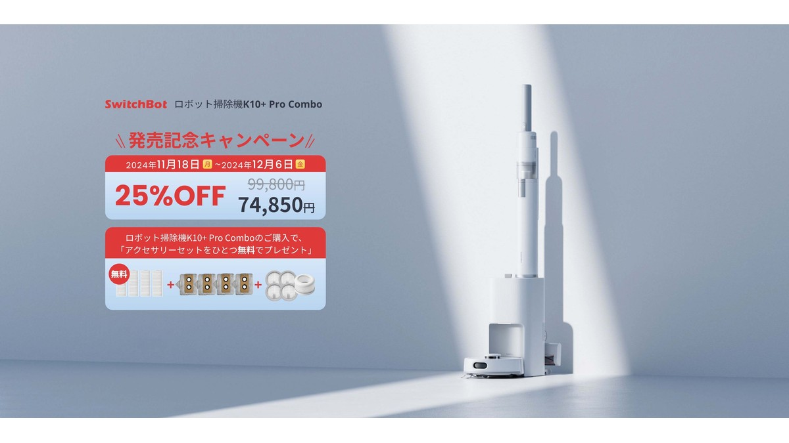
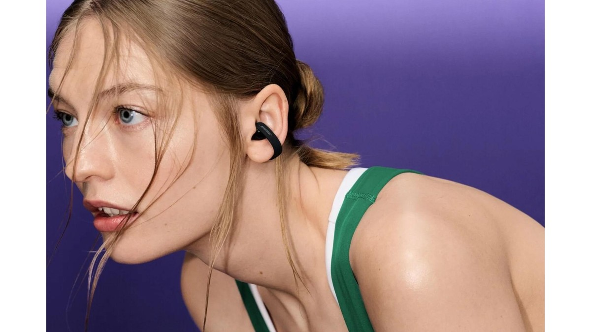
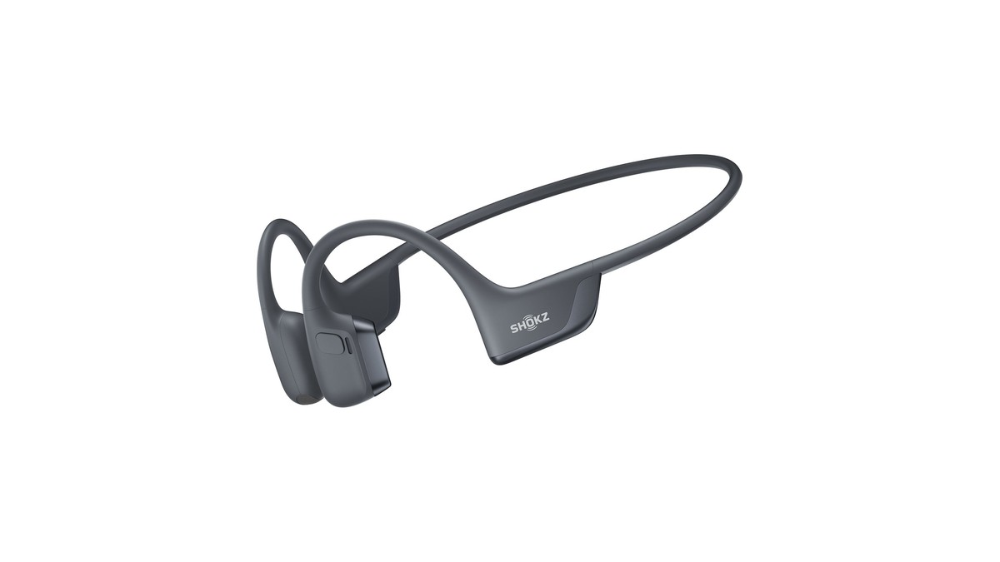
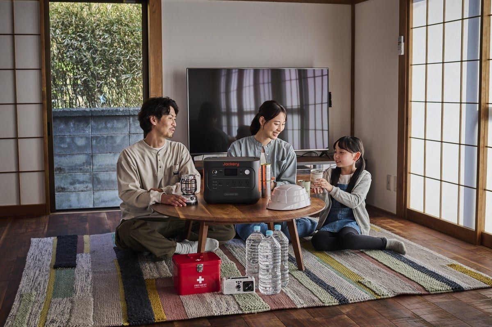
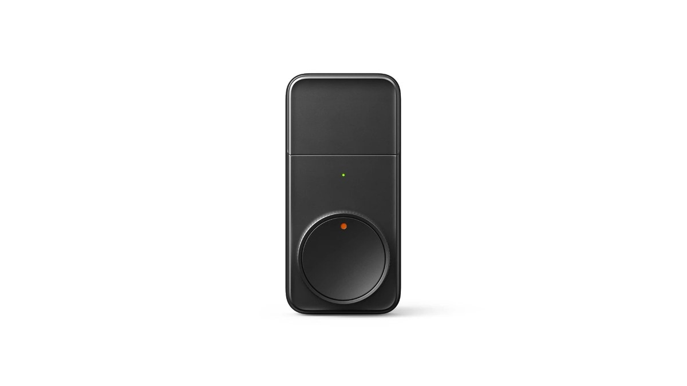
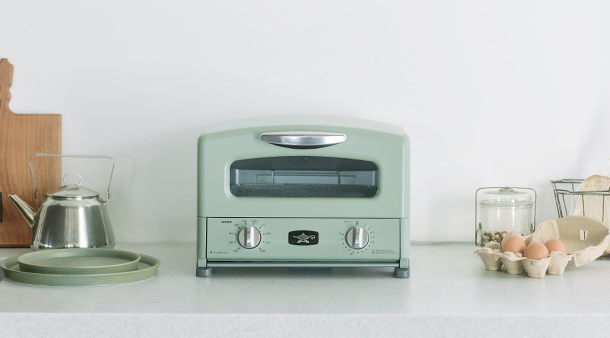
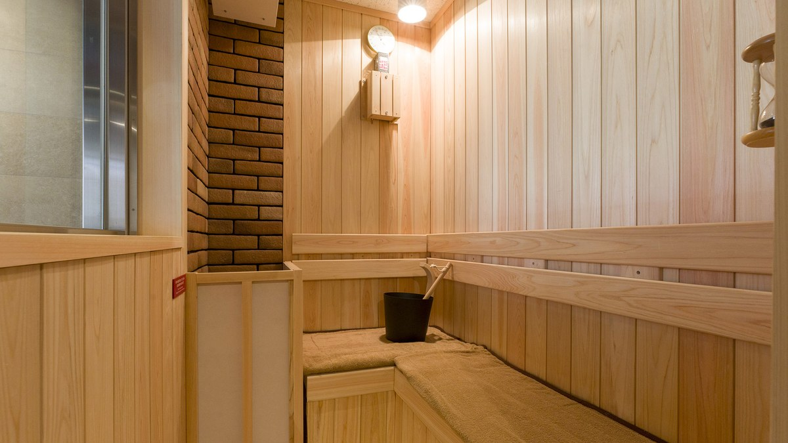
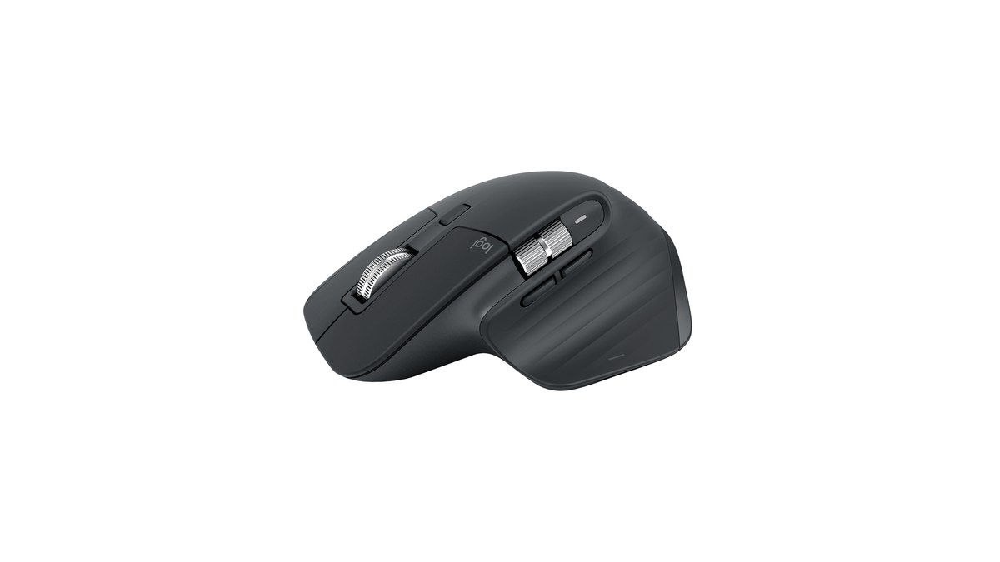

大きすぎず重すぎない。防災とベランダ作業用にEcoFlow RIVER 2 Proを選んだ理由と7.8kgの使い勝手
10kg超えの巨大ポタ電は部屋で邪魔になるが、小型すぎるバッテリーでは家電が動かない。その中間に位置する768Wh・定格800WのEcoFlow RIVER 2 Proを1年使った率直な実感と、70分満充電の強みをまとめます。

10kg超えの巨大ポタ電は部屋で邪魔になるが、小型すぎるバッテリーでは家電が動かない。その中間に位置する768Wh・定格800WのEcoFlow RIVER 2 Proを1年使った率直な実感と、70分満充電の強みをまとめます。
「ロボット掃除機を買っても、結局階段や棚の掃除用にスティック掃除機がもう1台必要で部屋が狭くなる」というジレンマ。小型ロボットとスティック掃除機が同じゴミ収集ステーションに収まる最新コンボ機を導入した本音をまとめます。

耳たぶを挟むイヤーカフ型のオープンイヤホン。カナル型の耳の痛みや蒸れから完全に解放され、1日中着けっぱなしでも痛くなりません。約4万円という高価格に見合うのか、音質と装着感のリアルをまとめます。

耳を塞がない骨伝導イヤホンは「音が軽くて低音が出ない」「音量を上げるとこめかみが震えてくすぐったい」のが長年の弱点でした。骨伝導と空気伝導を融合した最新フラッグシップに変えて、何が変わって何が変わらなかったのかを本音でまとめます。

地震や台風への備えとして10万円超のポータブル電源を導入しました。定格1500Wで家庭用家電がそのまま動く心強さと、10.8kgという重量をどう生活に組み込むか、使って分かった率直な実感とデメリットを記録します。

物理鍵を持ち歩く生活をやめたくてSwitchBotロックProを導入しました。指紋認証パッドの圧倒的な快適さと、万が一の締め出し事故を防ぐための運用ルール、そして電池持ちのリアルを記録します。

毎朝ちいさなカップで水を注ぐのが地味に面倒になり、ふるさと納税で評判だったアラジンの4枚焼きに変えました。手入れの手間が激減し、家族全員の朝食が一瞬で焼き上がるようになった話をまとめます。

大浴場のサウナは混雑やマナー、ととのい椅子の空き待ちで逆に疲れてしまうことがあります。部屋に本格サウナと天然地下水の水風呂がついた宿に泊まってみたら、想像以上に静かで贅沢な時間でした。

Apple純正の96Wアダプタは300g近くあり、カフェの緩いコンセントに挿すと重みで抜け落ちるのがストレスでした。3ポートで重さ半分のこれに変えて、荷物と電源周りの悩みが消えた話をまとめます。

1日8時間以上パソコンを触る生活で右手に違和感が出始め、思い切って高級マウスに変えました。クリック音の静かさと親指ホイールの便利さ、そして買う前に知っておくべき重さの欠点をまとめます。
